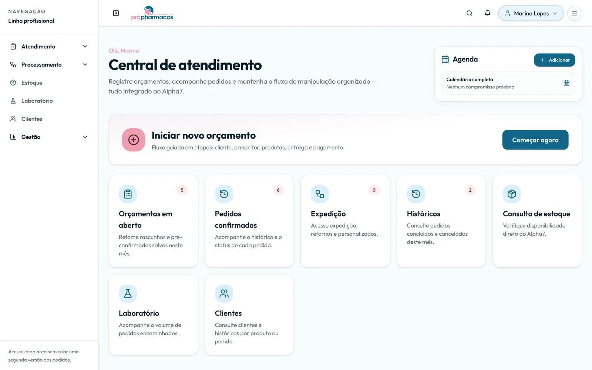
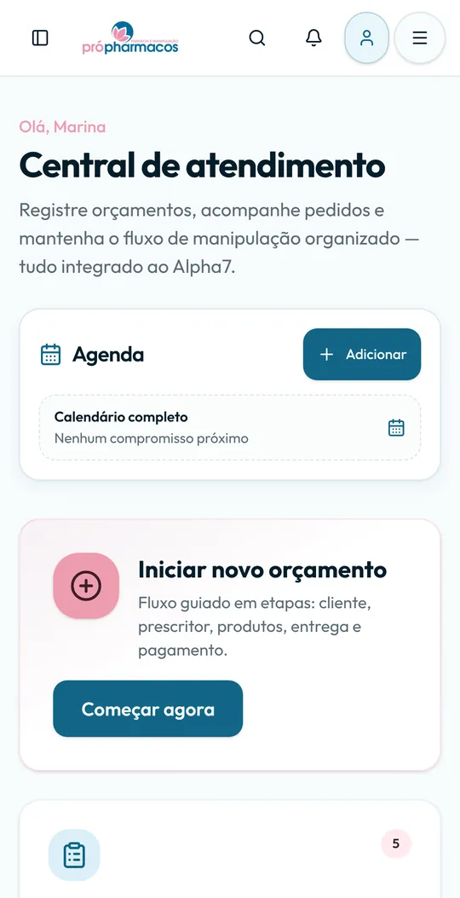
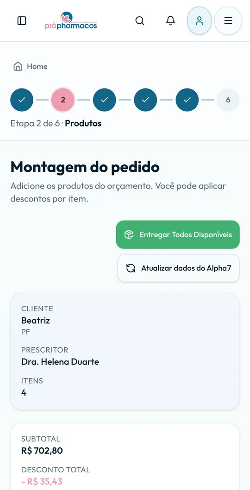
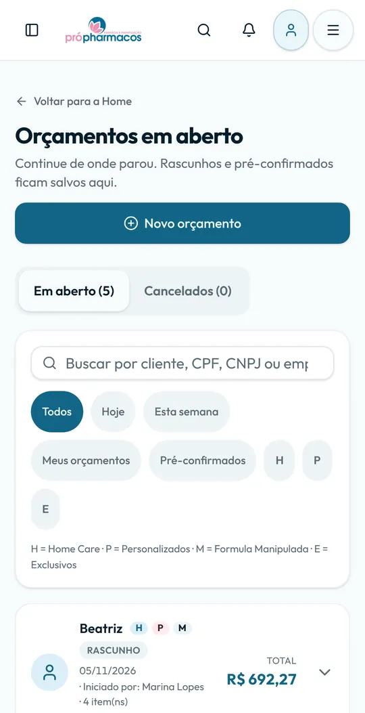

Planilhas espalhadas e desatualizadas
Disponível para projetos · Sistemas web, integrações e automações
Sistemas que simplificam o dia a dia da sua empresa.
Sou Wellington Cavalcante. Transformo planilhas, mensagens soltas e tarefas repetidas em sistemas simples de usar. Abaixo está um sistema real que eu desenvolvi e que uma equipe usa todos os dias.


Telas reais do sistema em funcionamento, preenchidas com dados fictícios.
ReactTypeScriptSupabasePostgreSQLIntegração com ERPAPIsAutomação de processosModo offlineApp AndroidGit e GitHubTestes automáticosPython
O que eu resolvo
Problemas comuns, soluções sob medida
A mesma informação digitada em dois sistemas
Integrações que passam os dados automaticamente
Pedidos perdidos no meio de mensagens
Cada pedido com etapa, responsável e histórico
Tarefas repetidas toda semana
Automações que fazem o trabalho sozinhas
Projeto em destaque
Plataforma de orçamentos e pedidos
Desenvolvida para uma farmácia de manipulação. Junta numa tela só os dados do sistema de gestão (ERP) e do sistema de produção, e acompanha cada pedido do orçamento até a entrega.
Central de atendimento
A tela inicial mostra o que precisa de atenção: orçamentos em aberto, pedidos confirmados, expedição e históricos, com um atalho para começar um novo orçamento.
1 / 7
Dados de clientes, produtos e valores são fictícios.
Funciona no celular, até sem internet
As mesmas telas se ajustam ao celular, e o sistema também virou aplicativo Android. Em eventos sem conexão, os orçamentos e pedidos ficam guardados no aparelho e são enviados sozinhos quando a internet volta.


24telas em uso
4sistemas externos integrados
62tabelas no banco de dados
151arquivos de testes automáticos
Integração com o ERP
O sistema lê clientes, produtos e estoque do ERP da empresa e, ao confirmar um pedido, envia o orçamento para lá automaticamente. Ninguém precisa digitar duas vezes.
Pedido nunca duplicado
Clique duplo, internet oscilando ou envio repetido: o sistema reconhece o mesmo pedido e não cria uma cópia. Permissões e limites de desconto são conferidos antes de gravar.
A equipe não para
Se o ERP estiver fora do ar, o pedido é confirmado mesmo assim e o envio fica pendente para ser refeito depois. O atendimento continua normalmente.
Serviços
O que posso fazer pela sua empresa
Atendo remotamente empresas de qualquer área: lojas, clínicas, escritórios e prestadores de serviço que querem ganhar tempo no dia a dia.
Sistemas internos
Cadastros, orçamentos, pedidos, estoque e agendamentos, do jeito que a sua equipe trabalha.
Ex.: orçamentos em etapas com PDF para o clienteIntegração entre sistemas
Faço os sistemas que você já usa trocarem informação, para ninguém digitar a mesma coisa duas vezes.
Ex.: pedido enviado ao ERP automaticamenteAutomações
Tarefas repetitivas rodando sozinhas e atendimento mais rápido.
Ex.: rastreio dos Correios no atendimentoPainéis e relatórios
Os números da empresa num lugar só, atualizados e fáceis de ler.
Ex.: visão comercial e controle de boletosMelhorias em sistemas existentes
Correções, telas novas e mais velocidade em sistemas que você já tem.
Ex.: consultas lentas otimizadasSites e páginas
Páginas rápidas e bem apresentadas para mostrar o seu negócio e receber contatos.
Ex.: página de apresentação com contato diretoComo eu trabalho
Primeiro o processo, depois o código
Entendo o processo
Converso com quem vai usar o sistema e entendo como o trabalho acontece hoje.
Construo o essencial
Começo pela parte que mais economiza tempo da equipe, de forma simples.
Testo com a equipe
Valido com quem usa de verdade e ajusto antes de seguir.
Evoluo junto
Acompanho o uso e acrescento melhorias por etapas.
Sobre mim
Do atendimento ao cliente para o código
Comecei no atendimento ao cliente, em 2024. Foi ali que vi de perto quanto tempo se perde com planilhas, sistemas que não conversam e pedidos anotados em vários lugares.
Em 2026 passei a desenvolver o sistema que a equipe usa hoje. Trabalho com desenvolvimento assistido por inteligência artificial e garanto a qualidade testando com quem usa e com verificações automáticas a cada alteração.
Curso Ciência da Computação na UNIP e estudo todos os dias.
- ago/2024Atendimento ao cliente: o dia a dia de quem usa os sistemas
- jan/2026Início do bacharelado em Ciência da Computação (UNIP)
- jun/2026Desenvolvedor web: primeira versão da plataforma de orçamentos e pedidos
- HojePlataforma em uso diário, com app Android e modo offline, e projetos como freelancer
- Atuação
- Desenvolvedor web e freelancer
- Formação
- Ciência da Computação, UNIP (cursando)
- Local
- Santo André, São Paulo · atendimento remoto
- Ferramentas
- ReactTypeScriptSupabasePostgreSQLGit e GitHubPython
Contato
Tem uma tarefa que toma tempo demais?
Me conte como ela funciona hoje. Respondo com uma ideia de solução e o próximo passo, sem compromisso.